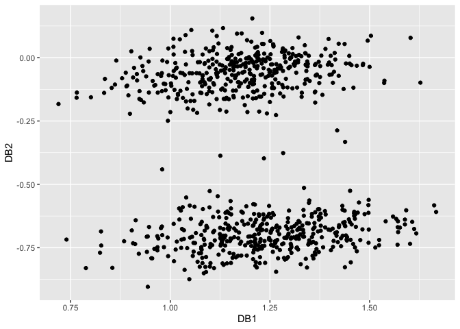

The R package dobin constructs a set of basis vectors tailored for outlier detection as described in (Kandanaarachchi and Hyndman 2021). According to Collins English dictionary, “dob in” is an informal verb meaning to inform against specially to the police. Naming credits goes to Rob Hyndman.
Installation
You can install dobin from CRAN:
install.packages("dobin")Or you can install the development version from GitHub
install.packages("devtools")
devtools::install_github("sevvandi/dobin")Example
A bimodal distribution in six dimensions, with 5 outliers in the middle. We consider 805 observations in six dimensions. Of these 805 observations, 800 observations are non-outliers; 400 observations are centred at and the other 400 centred at
. The outlier distribution consists of
points with mean
and standard deviations
in the first dimension and are similar to other observations in other dimensions.
library(dobin)
library(ggplot2)
set.seed(1)
# A bimodal distribution in six dimensions, with 5 outliers in the middle.
X <- data.frame(
x1 = c(rnorm(400,mean=5), rnorm(5, mean=0, sd=0.2), rnorm(400, mean=-5)),
x2 = rnorm(805),
x3 = rnorm(805),
x4 = rnorm(805),
x5 = rnorm(805),
x6 = rnorm(805)
)
labs <- c(rep("Norm",400), rep("Out",5), rep("Norm",400))
out <- dobin(X)
autoplot(out)
To see the outliers in a different colour we plot again.
XX <- cbind.data.frame(out$coords[ ,1:2], as.factor(labs))
colnames(XX) <- c("DB1", "DB2", "labs" )
ggplot(XX, aes(DB1, DB2, color=labs)) + geom_point() + theme_bw()To compare, we perform PCA on the same dataset. The first two principal components are shown in the figure below:
set.seed(1)
# A bimodal distribution in six dimensions, with 5 outliers in the middle.
X <- data.frame(
x1 = c(rnorm(400,mean=5), rnorm(5, mean=0, sd=0.2), rnorm(400, mean=-5)),
x2 = rnorm(805),
x3 = rnorm(805),
x4 = rnorm(805),
x5 = rnorm(805),
x6 = rnorm(805)
)
labs <- c(rep("Norm",400), rep("Out",5), rep("Norm",400))
out <- prcomp(X, scale=TRUE)
XX <- cbind.data.frame(out$x[ ,1:2], as.factor(labs))
colnames(XX) <- c("PC1", "PC2", "labs" )
ggplot(XX, aes(PC1, PC2, color=labs)) + geom_point() + theme_bw()